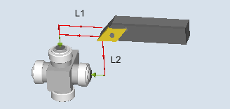
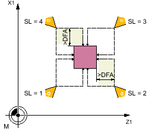
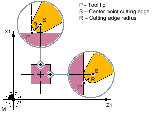

With this measuring version, the tool length (L1 and/or L2) of a turning tool with cutting edge positions 1 to 8 can be determined. The measuring version checks whether the difference to be corrected with respect to the old tool length lies within a defined tolerance range:
Upper limits: Safe area TSA and dimensional difference control DIF
Lower limit: Work offset range TZL
If this range is not violated, the new tool length is accepted in the tool offset, otherwise an alarm is output. Violation of the lower limit is not corrected.
For "complete" measuring, all lengths of a turning tool are measured:
Turning tool with cutting edge positions 1 to 4: L1 and L2
Turning tool with cutting edge position 5 or 7: L2
Turning tool with cutting edge position 6 or 8: L1
If the turning tool has a cutting edge position 1 to 4, contact is made with the probe in both axes of the plane (for G18 Z and X), whereby the measurement starts with the 1st axis of the plane (for G18, Z). For cutting edge positions 5 to 8, a measurement is only performed in one axis:
Cutting edge position 5 or 7: 1. measuring axis for G18 Z
Cutting edge position 6 or 8: 2. measuring axis for G18 X.
When measuring "axis by axis", the length of the turning tool in the parameterized measuring axis is measured.
Measure: Turning tool (CYCLE982), example: Complete measuring
The tool probe must be calibrated, see Calibrate probe (CYCLE971).
The approximate tool dimensions must be entered in the tool offset data:
Tool type 5xx
Cutting edge position, cutting edge radius
Lengths in X and Z
The tool to be measured must be active with its tool offset values when the cycle is called.
Before the cycle is called, the tool must be moved to the tool tip starting position, as shown in the following diagram.
Cutting edge positions 1 to 4 and suitable starting positions for both axes
The center of the tool probe and the approach distance are calculated automatically and the required traversing blocks generated. The center of the cutting edge radius is positioned at the center of the probe.
Measuring the length of a turning tool: Offset by the cutting edge radius, example SL=3
For an "axis by axis" measurement, the tool tip is the measurement path distance away from the probed measuring surface of the probe.
For a "complete" measurement, after the measurement, the tool is positioned at the starting point before the cycle was called.